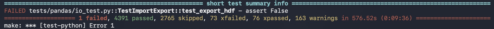
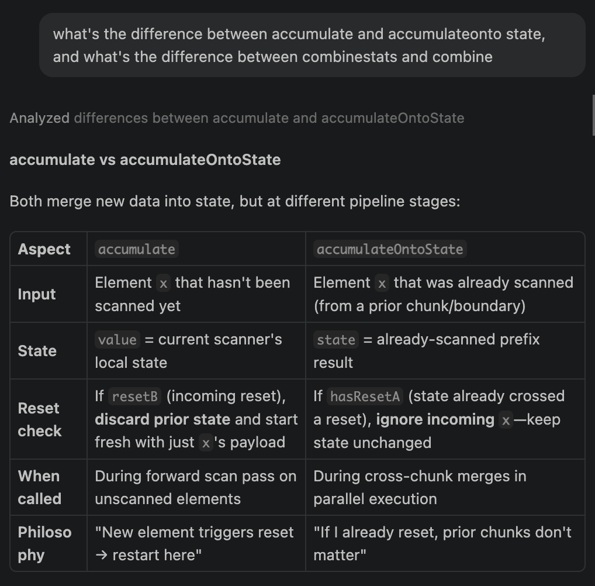
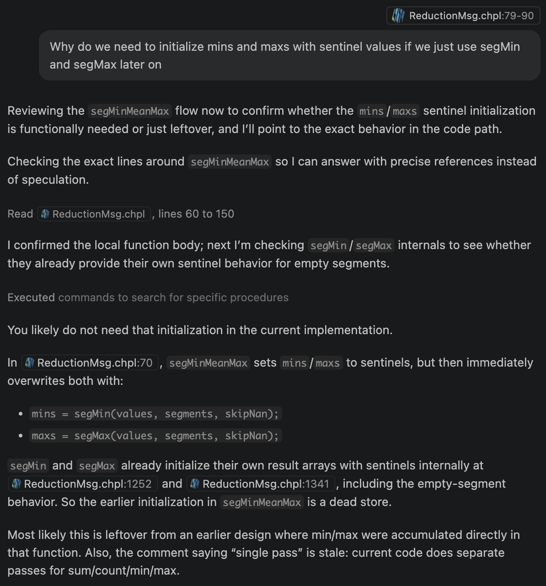
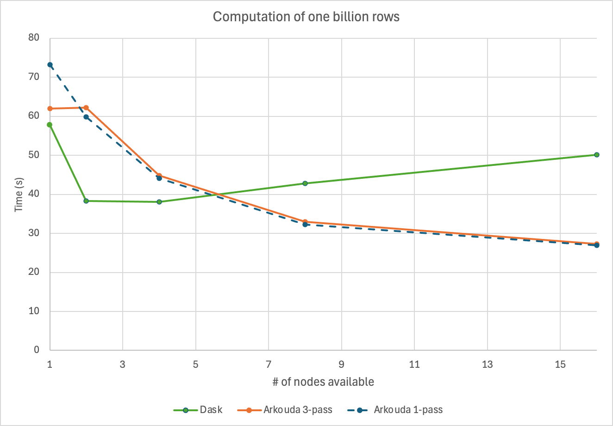
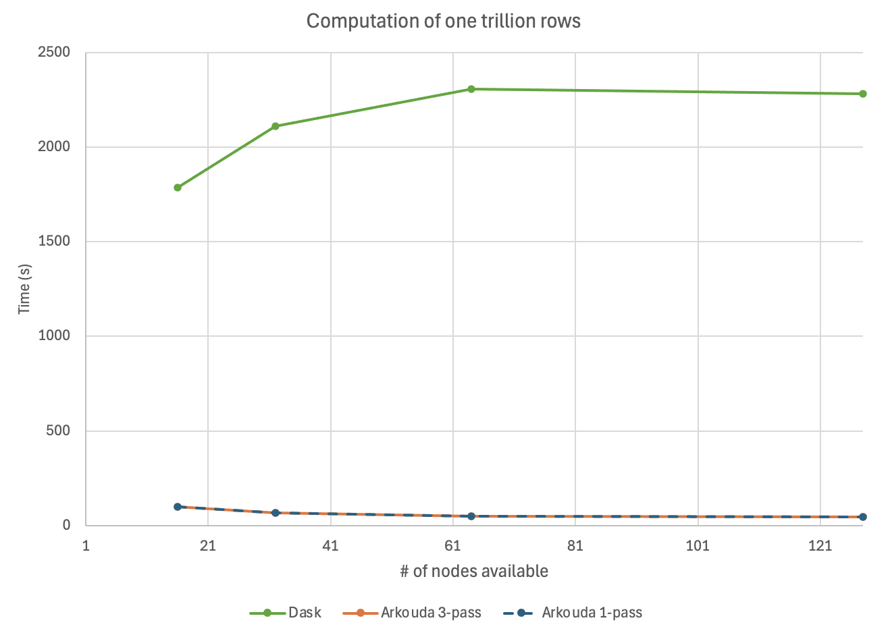
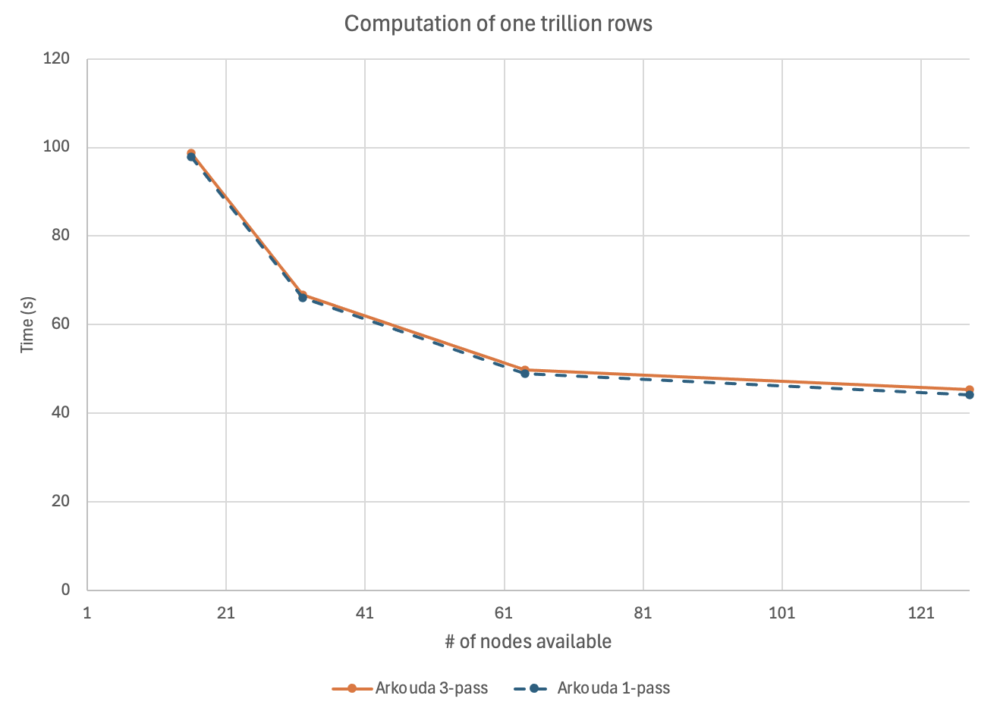

How performant are different programming languages and libraries with data processing? The 1 billion row challenge (1BRC) has become a popularized, fun way to test this. The task itself is simple: Calculate the min, mean, and max of 1 billion temperature measurements, grouped by weather station. We’ve talked about the billion row challenge on this blog before in Parallel Processing of a Billion Rows of Data in Chapel. The recent 1 trillion row challenge (1TRC) takes this a step further, extending the challenge to a trillion rows of data. To accommodate larger-scale data, the challenge also switches from using plain text files to spreading data across multiple compressed Apache Parquet files.
At this scale, parallel and/or distributed computing is almost certainly needed for reasonable compute times. With Chapel being a language specifically designed for parallel computing, and Arkouda acting as a bridge between Python and parallelized Chapel code, I wanted to test how Arkouda fares against more traditional distributed Python approaches, such as using Dask. In this article, I’ll detail my experience setting up Arkouda and Chapel, plumbing a custom Arkouda function for combined statistics, generating data for the challenge, and finally benchmarking Arkouda and Dask on the challenge.
With that, let’s start setting up Arkouda! Arkouda uses a client-server model where the Python library interfaces with a server written in Chapel, so we’ll need to both install Arkouda and build its server.
Installing Prerequisites
Installation of Anaconda, Chapel, and Arkouda was mostly straightforward,
following the documentation, aside from one issue: Installing Anaconda via Homebrew doesn’t automatically give access to the conda command! Turns out I needed to add Anaconda to my $PATH manually with the following lines, which I’ve updated the documentation to reflect:
$ echo 'export PATH="/opt/homebrew/anaconda3/bin:$PATH"' >> ~/.zshrc
$ source ~/.zshrc
Building the Arkouda Server
Building the server once Arkouda was installed was also straightforward. Following the steps outlined in the documentation and running make, I had a server ready to run with ./arkouda_server!
To validate the build, I then ran the Python test suite with make test, where I ran into one failing test:

I describe the error in detail in this GitHub issue. Essentially, a test named test_export_hdf fails due to mismatched columns, and this is caused by a higher-than-supported hdf5 version 2.10.0. I ended up resolving this by changing Arkouda’s hdf5>=1.12.2 dependency to hdf5==1.14.6.
That said, this test failure didn’t strictly block me from moving forward: I could’ve likely set it aside and used the server anyway since I wasn’t planning on using hdf5.
Ungrouped Min, Mean, and Max
Now that I had the Arkouda server up and running, I was ready to test it out! I started with 1,000 rows of data spread across 2 Parquet files, and I used Arkouda to simply calculate the min, mean, and max of them with no grouping by stations yet, just to get a feel of what I was working with. As a Python programmer, I felt Arkouda’s syntax to be familiar, similar to other libraries like NumPy or Pandas:
from math import ceil
import arkouda as ak
from os.path import abspath
n = 1_000
chunksize = 500
ak.connect() # Connect to the server
data = ak.read(
[abspath(f"measurements-{i}.parquet") for i in range(ceil(n / chunksize))]
)
print(
ak.mink(data["measure"], 1)[0],
ak.mean(data["measure"]),
ak.maxk(data["measure"], 1)[0]
)
I then calculated the statistics grouped by station. My reference Dask implementation, adapted from Coiled’s Dask solution, was as follows. I modified their code to work on my local Slurm cluster, then scaled it accordingly to the number of nodes I’d be using:
import dask.dataframe as dd
# Modify to your desired directory accordingly for file spilling
SCRATCH_DIR = ".../dask-scratch"
cluster = SLURMCluster(
cores=128,
memory="500GB",
walltime="5-00:00:00",
local_directory=SCRATCH_DIR,
)
client = Client(cluster)
nodes = 1 # Replace with the number of nodes made available as needed
cluster.scale(jobs=nodes)
client.wait_for_workers(n_workers=nodes)
df = dd.read_parquet(
"./",
dtype_backend="pyarrow",
)
df = df.groupby("station").agg(["min", "max", "mean"])
df = df.sort_values("station").compute()
print(df)
Then, I did the same with Arkouda. The built-in Arkouda grouped.min, grouped.mean, and grouped.max functions compute the min, mean, and max across each group using three separate parallelized passes through the data:
def compute_arkouda_stats(data):
stations = data["station"]
measures = data["measure"]
# Sort by station name on the server so group keys are in station order.
order = ak.argsort(stations)
stations = stations[order]
measures = measures[order]
grouped = ak.GroupBy(stations, assume_sorted=True)
# Three passes over grouped values.
station_keys, mins = grouped.min(measures, skipna=True)
_, means = grouped.mean(measures, skipna=True)
_, maxs = grouped.max(measures, skipna=True)
return station_keys, mins, means, maxs
This worked great, but iterating over one trillion rows of distributed data can be expensive. Rather than doing it three times—once to calculate each statistic—what if we could calculate the min, mean, and max in only one pass? Arkouda doesn’t currently provide a built-in function for that, so I took this as an opportunity to make my own custom function!
Adding a Grouped min_mean_max()
You can check out the full changes I’ve made here. My new GroupBy.min_mean_max(values, skipna=True) returns the unique keys plus a min, mean, and max per group, computed in a single server-side pass. On the Python client side (groupbyclass.py), I added a new min_mean_max reduction type that sends the existing [note:Arkouda’s grouped reductions are all backed by a single server command, command with segmentedReduction (handled by segmentedReductionMsg in ReductionMsg.chpl). It receives the group’s values array, a segments array of offsets that marks where each group begins (group i spans values[segments[i]] through values[segments[i+1] - 1], with the last segment running to the end), and an op string. A select on op then dispatches to a per-segment routine—segSum, segMean, segMin, segMax, and so on—each of which reduces every contiguous segment independently in a single parallel, distributed pass and returns one result per group. My min_mean_max fits into this as a new op backed by segMinMeanMax, reusing the same command to compute three statistics at once.]op="min_mean_max". The server replies with three symbol names joined by + (mirroring how existing Arkouda code returns multiple values), which I parse back into three separate pdarrays (mins, means, maxs). Here are some excerpts from the changes to the Arkouda Python client:
rep_msg = generic_msg(
cmd="segmentedReduction",
args={
"values": permuted_values,
"segments": self.segments,
"op": "min_mean_max",
"skip_nan": skipna,
"ddof": 1,
},
)
# Parse the response: should be "min_name+mean_name+max_name"
parts = cast(str, rep_msg).split("+")
if len(parts) != 3:
raise RuntimeError(f"Unexpected response from min_mean_max reduction: {rep_msg}")
mins = create_pdarray(cast(str, parts[0]))
means = create_pdarray(cast(str, parts[1]))
maxs = create_pdarray(cast(str, parts[2]))
return self.unique_keys, mins, means, maxs
The heavy lifting happens in Chapel (ReductionMsg.chpl) in a new segMinMeanMax proc. Instead of three reductions, it does one segmented parallel scan over the values.
Each element is mapped to a tuple, (resetAtSegmentStart, hasValid, min, sum, max, count). The first element of every segment is flagged as a reset point. I also wrote a custom scan operator, ResettingMinMeanMaxScanOp, that accumulates min, sum, max, and count, but resets its running state whenever it hits a segment boundary. After the scan, the last element of each segment holds the fully combined stats for that group. Here are some excerpts from my Chapel code supporting this:
var mins = makeDistArray(D, t);
var means = makeDistArray(D, real);
var maxs = makeDistArray(D, t);
forall s in segments with (var agg = newDstAggregator(bool)) {
agg.copy(flagvalues[s][0], true);
}
const scanresult = ResettingMinMeanMaxScanOp scan flagvalues;
// Collect the mins, means, and maxes from the scan results for each segment
forall (i, mn, mu, mx, low) in zip(D, mins, means, maxs, segments)
with (var minAgg = newSrcAggregator(t),
var meanAgg = newDstAggregator(real),
var maxAgg = newSrcAggregator(t)) {
var vi: int;
if (i < D.high) {
vi = segments[i+1] - 1;
} else {
vi = values.domain.high;
}
if (vi >= low) {
const stats = scanresult[vi];
const hasValid = stats(1);
if hasValid {
minAgg.copy(mn, stats(2));
maxAgg.copy(mx, stats(4));
meanAgg.copy(mu, stats(3) / stats(5):real);
} else {
meanAgg.copy(mu, 0.0);
}
}
}
return (mins, means, maxs);
Using GitHub Copilot with Chapel
Because Chapel has a smaller training corpus than languages like Python and JavaScript, I initially expected AI programming tools to struggle with it. However, I found using GitHub Copilot with Chapel to be a similar experience to using it with those more common languages, including similar upsides and struggles. Most of my prompts produced working code and clear explanations on the first try, the main exception being that the agent occasionally needed convincing when it started mixing newly written code with leftover remnants of earlier attempts, even when those remnants were no longer necessary—something also common with other languages.
For example, here’s a session where I prompted Copilot to explain the difference between accumulate and accumulateOntoState, as well as the difference between combineStats and combine (where these are all methods in the user-defined reduction framework):

Here, Copilot left redundant legacy code, which required me to convince it of such.

Calling min_mean_max()
After wiring our new min_mean_max function into place, we can now use it in our calculation!
# One pass over grouped values.
station_keys, mins, means, maxs = grouped.min_mean_max(
measures, skipna=True
)
return station_keys, mins, means, maxs
Computing on 1 Billion Rows
Next, I tried out all three approaches on 1 billion rows. I modified Coiled’s generate_data.py script, which generates data across multiple files, to do so on my local system instead of a Coiled cluster.
(Click here to see the data generation script)
# This script was adapted from Jacob Tomlinson's 1BRC submission
# https://github.com/gunnarmorling/1brc/discussions/487
from math import ceil
import numpy as np
import pandas as pd
n = 1_000_000_000 # Total number of rows of data to generate
chunksize = 100_000 # Number of rows of data per file
std = 10.0 # Assume normally distributed temperatures with a standard deviation of 10
lookup_df = pd.read_csv("lookup.csv") # Lookup table of stations and their mean temperatures
def generate_chunk(partition_idx, chunksize, std, lookup_df):
"""Generate some sample data based on the lookup table."""
rng = np.random.default_rng(partition_idx) # Deterministic data generation
df = pd.DataFrame(
{
# Choose a random station from the lookup table for each row in our output
"station": rng.integers(0, len(lookup_df) - 1, int(chunksize)),
# Generate a normal distribution around zero for each row in our output
# Because the std is the same for every station we can adjust the mean for each row afterwards
"measure": rng.normal(0, std, int(chunksize)),
}
)
# Offset each measurement by the station's mean value
df.measure += df.station.map(lookup_df.mean_temp)
# Round the temperature to one decimal place
df.measure = df.measure.round(decimals=1)
# Convert the station index to the station name
df.station = df.station.map(lookup_df.station)
# Save this chunk to the output file
filename = f"measurements-{partition_idx}.parquet"
df.to_parquet(filename, engine="pyarrow")
if __name__ == "__main__":
for i in range(ceil(n / chunksize)):
generate_chunk(i, chunksize, std, lookup_df)
After timing each method’s performance on the data using an HPE Cray EX system, here are the results:

A few insights stand out. On a smaller number of nodes (or locales using Chapel terminology), Dask initially beats Arkouda. As we increase the number of available nodes, however, Arkouda pulls ahead while Dask’s performance actually degrades. A possible explanation for Dask’s slowdown is under-parallelization: the additional compute doesn’t parallelize the work any further, and instead introduces more coordination overhead.
The two Arkouda approaches are also worth comparing. The three-pass approach edges out the one-pass approach on a single node, but the one-pass approach becomes marginally faster once we use two or more nodes. This could suggest that my custom one-pass Arkouda message may be doing more work than it strictly needs to.
Computing on 1 Trillion Rows
Generating 1 trillion lines is quite a bit heftier than generating 1 billion, so I made some tweaks to make generation more manageable and modular. The Dask-based generation I used for 1 billion rows ran into scaling issues at this size, so I switched to generating the data with Slurm array jobs instead. I first modified generate_data.py to take in several arguments: namely, the partition ID, number of chunks to generate, chunk size, and path to my lookup table of stations and their mean measurements.
def parse_args():
parser = argparse.ArgumentParser(
description="Generate one or more 1BRC data chunks for a SLURM array task."
)
parser.add_argument(
"--partition-idx",
type=int,
default=int(os.environ.get("SLURM_ARRAY_TASK_ID", 0)),
help="First partition index to generate (defaults to $SLURM_ARRAY_TASK_ID).",
)
parser.add_argument(
"--chunks-per-task",
type=int,
default=int(os.environ.get("CHUNKS_PER_TASK", 1)),
help="Number of consecutive partitions this task should generate.",
)
parser.add_argument(
"--chunksize",
type=int,
default=int(os.environ.get("CHUNKSIZE", 1_000_000)),
help="Number of rows of data per partition.",
)
parser.add_argument(
"--lookup",
default=os.environ.get("LOOKUP_CSV", "lookup.csv"),
help="Path to the lookup table of stations and their mean temperatures.",
)
return parser.parse_args()
if __name__ == "__main__":
args = parse_args()
# Lookup table of stations and their mean temperatures
lookup_df = pd.read_csv(args.lookup)
# SLURM provides the partition index; each array task can cover a contiguous
# block of partitions so the total number of array tasks stays manageable.
for offset in range(args.chunks_per_task):
partition_idx = args.partition_idx + offset
generate_chunk(partition_idx, args.chunksize, std, lookup_df)
After that, I created a Slurm sbatch script to generate the full 1 trillion lines using the Slurm workload manager on my system, creating tasks to call the Python script with appropriate arguments for each batch of chunks to generate.
#!/bin/bash
#SBATCH --job-name=1trc-gen
#SBATCH --output=logs/gen-%A_%a.out
#SBATCH --error=logs/gen-%A_%a.err
#SBATCH --nodes=1
#SBATCH --ntasks=1
#SBATCH --cpus-per-task=128
#SBATCH --mem=400G
#SBATCH --time=01:00:00
# SLURM supplies the input to generate_chunk: each array index becomes the
# starting partition index. Adjust the range to cover the partitions you need.
# For n = 1e12 rows at CHUNKSIZE = 1e6 there are 1,000,000 partitions; with
# CHUNKS_PER_TASK partitions handled per array task you need
# ceil(1,000,000 / CHUNKS_PER_TASK) array tasks.
#SBATCH --array=0-999:1
set -euo pipefail
# Number of consecutive partitions each array task generates.
export CHUNKS_PER_TASK=${CHUNKS_PER_TASK:-1000}
# Rows per partition.
export CHUNKSIZE=${CHUNKSIZE:-1000000}
# Lookup table location.
export LOOKUP_CSV=${LOOKUP_CSV:-lookup.csv}
mkdir -p logs
# SLURM_ARRAY_TASK_ID is the first partition index for this task. When each
# task handles a block of partitions, stride the starting index accordingly.
PARTITION_IDX=$(( SLURM_ARRAY_TASK_ID * CHUNKS_PER_TASK ))
srun python generate_data.py \
--partition-idx "${PARTITION_IDX}" \
--chunks-per-task "${CHUNKS_PER_TASK}" \
--chunksize "${CHUNKSIZE}" \
--lookup "${LOOKUP_CSV}"
Calling sbatch generate_data.sbatch and waiting for the tasks to complete, we’ve now generated our 1 trillion rows split across 1 million files, each containing 1 million rows of data.
I then put Arkouda and Dask up against our full dataset.
With each million-row file being about 2.4 megabytes and there being 1 million files, that totals around 2.4 terabytes of data. The ak.argsort in Arkouda uses temporary arrays to do its computation, so we’ll need more memory than that. Since the compute nodes on the HPE Cray EX system I was using each had about 256 gigabytes of memory per node available to Arkouda, I needed to start measuring at around 16 nodes to ensure I had enough memory for computation.
However, when computing with Dask, I still found workers dying while grouping the data by station with more nodes (likely due to running out of memory), so I needed to make a small tweak when aggregating our min, mean, and max to ensure that Dask used a tree reduction (where partitions are reduced locally, then partial results are merged level-by-level into a final result) instead of a peer-to-peer shuffle (where every worker hashes its partial aggregates by station and sends them all‑to‑all across the cluster into many buckets, creating a synchronization barrier and heavy buffering/spilling):
result = (
df.groupby("station")
.agg(["min", "max", "mean"], split_out=1) # Tree reduction
.compute()
)
Here’s how the two performed:

We can see that Arkouda blows Dask out of the water here. The next graph omits the Dask results to zoom in on the Arkouda results:

Both the Arkouda 1-pass and 3-pass approaches have relatively comparable times that only decrease as the number of nodes goes up, while Dask continues to get slower.
One discrepancy is worth mentioning: Coiled reports completing the 1 trillion row challenge with Dask in about 8 minutes, while my Dask runs took closer to 28 minutes. I’m not sure what accounts for the gap. It could be the fact that I switched to a tree reduction, or it could be differences in cluster hardware or configuration. I would be happy to hear thoughts from any Dask experts reading this.
Conclusions
When doing parallelized computations on smaller amounts of data, Dask appears to beat Arkouda in speed when the number of compute nodes is kept relatively low. However, as more nodes are made available, Arkouda seems to be better at harnessing parallelization to speed up computations, especially as the amount of data increases, increasing the memory and number of nodes needed to handle such information.
The two tools also felt quite different to work with. Dask was a more familiar starting point, requiring minimal upfront setup: Just install and import! Getting a working solution also took less effort, although memory issues were tougher to debug: Vague errors of workers dying required the help of AI to search through worker logs for the root cause. Arkouda required more upfront investment, learning Chapel and building the server through an unfamiliar setup process. Once that was done, however, scaling from 1 billion to 1 trillion rows was a matter of simply adding nodes. Writing a custom single-pass reduction in Chapel was also a unique experience that let me understand how Arkouda parallelizes grouped operations under the hood—something that was abstracted away while using Dask.
So, Arkouda or Dask? If you’re limited to just a few nodes, the simple setup of Dask makes it a convincing choice. But once you start scaling up in data and compute nodes, those extra minutes of setup are well worth it in exchange for Arkouda’s ability to efficiently take advantage of the added parallelism.